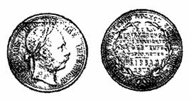
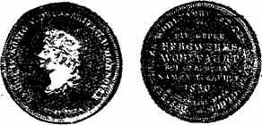
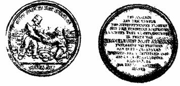
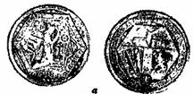
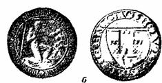

Серебро у XIX И XX веках
 Учение о рудных месторождениях и нумизматика
Учение о рудных месторождениях и нумизматика
В 1912 г. К. И. Богданович писал: «Учение о рудных месторождениях — одна из наиболее старых ветвей геологии… История этого учения органически связана с Фрейбергом, Клаусталем, Пршибрамом». Конечно, при этом имелась в виду, в первую очередь, научная деятельность горных академий, образованных во Фрейберге в 1766 г., Клаустале в 1775 г., Пршибраме в 1849г. Но бесспорно также, что открытые в средневековье в районе этих городов и с тех пор хорошо изученные крупнейшие месторождения, оказались необходимой базой и создали предпосылки для развития именно здесь учения о рудных месторождениях.
Какие достижения геологии и горного дела в этих трех районах в XIX столетии могут иллюстрировать нумизматические памятники?
Пршибрам. В 1875 г. был отчеканен флорин — рис. 108 с надписью на оборотной стороне по — австрийски (в середине монеты) и по-чешски (по кольцу): «в память достижения 1000-метровой глу — бины», а внизу «Пршибрам, 1875». В австрийских источниках пройденная до этой глубины шахта названа «Адальберт» (возможно, по наименованию жилы, на которой она была пробита), в чешских, позднее, она называется «Прокоп» — в честь национального героя гуситских войн. Упоминается также шахта «Войтек», с заложения которой «в 1779 г. была открыта славная эра глубинных разработок в этих местах».

Рис. 108. Флорин 1875 г. из серебра Пршибрама.
В 1886 г. «Горный журнал» отмечал, что «Пршибрам, оказывается ныне более богатым, чем прежде, и в 1874 г. дал 40700 фунтов серебра», из которого, вероятно, и отчеканена памятная монета.
К 1913 г. шахта «Адальберт» имела глубину 1300 м.
По данным 1971 г. шахта «Прокоп» имеет глубину 1520 м. Жилы Пршибрама, среди которых, кроме се-ребро-свинцово-цинковых, выделяются кварцево-золото-рудные и другие, имеют протяженность до 4 км. Мощность жил 1 — 2 м, в раздувах до 20 м. Некоторые жилы простые, другие, к которым относится Адальбертская главная жила, — комплексные. На глубине свыше 1500 м признаков выклинивания или существенного изменения — состава не отмечается. Жильными минералами являются сидерит, кварц, кальцит и барит; рудными — серебро-содержащий галенит, сфалерит, блеклая руда, бурнонит, красная серебряная руда и самородное серебро. Руда содержала в среднем 0,185% серебра и 23% свинца. Сейчас разрабатываются руды с более низким содержанием металлов.
Пршибрам является последним месторождением серебра, упомянутым на монете, и именно потому, что здесь успешно шло освоение и изучение месторождения в глубину.
Клаусталь. О добыче серебра в Клаустальском горном округе от XIX столетия остались нумизматические памятники, связанные с выявлением на месторождении геологических особенностей иного рода. В 1830 г. был отчеканен талер (рис. 109) королевства Ганновер, которое возникло в 1814 г. на территории крупнейшего из- Брауншвейг-Люнебургских княжеств. В 1833 и
1834 гг. чеканились близкие по надписи гульдены. На оборотной стороне талера написано в середине: «добыто из рудника Вольфарт близ Клаусталя», а по кольцу: «рудники Вольфарт — счастье Гарца» (этой надписи на гульденах нет). Из надписей можно сделать вывод, что месторождение Вольфарт было новейшим счастливым открытием того времени. На это событие проливают свет следующие краткие слова К. И. Богдановича: «Гроддек описал также жильные сланцы в жилах Верхнего Гарца (например, около Клаусталя в руднике Вольфарт)». Видимо, рудоносные части жил Вольфарта, сверху закрытые глинистыми сланцами тектонического происхождения, долго оставались без внимания рудокопов, считавших их безрудными маломощными руше-лями, а в период господства нептунистической теории А. Г. Вернера — просто заполнением трещин глинами, принесенными водой. С отказом от этих представлений и разработкой новых взглядов, на основании которых возникла гидротермальная теория, а также развитием тектоники жилы Вольфарта были вскрыты горными работами и оказались «счастьем Гарца».

Рис. 109. Талер 1830 г. из серебра Вольфарта.
Фрейберг. Особенно интересным памятником истории учения о рудных месторождениях является отчеканенная во Фрейберге в 1847 г. серебряная медаль — рис. 110. Она — представитель выделенного В. А. Обручевым «последнего цветущего периода» Фрейбергских рудников.

Рис. 110. Медаль 1847 г. из серебра Фрейберга 4 /5 натур, вел.).
Медаль имеет массу 66 г и диаметр 50 мм. На ее лицевой стороне показан молодой рудокоп, передающий пожилому рудокопу сосуд с самородками серебра, выбитыми в результате ручной (с помощью молотков, лежащих у его колена) разборки руды. Сбоку — вагонетка с рудой. На заднем плане — окраина Фрейберга. Вверху — обычная надпись с благославлением горному делу, внизу — приветствие горняков: «Глюкауф!» — «В добрый час!». Медаль вырезал Ф. Ульбрихт по проекту Е. Гойх-лера.
На оборотной стороне медали надпись, которая в переводе означает: «Начало креста „Новой надежды“ пологой и „Христиана“ стоячего в I горной сажени над гезугштреком 1/2 7 в поле рудника Гиммельфарт вместе с Авраамом близ Фрейберга подарило в кварталах дня воспоминаний и троицы 1847 г. с площади жилы в 2 3/4 кв. горной сажени 13 1/2 центнера самородного серебра»[40]. Этот дословный перевод надписи, отражая специфическую старинную терминологию саксонского горного дела, сначала был не очень понятен. Разобраться в нем помогли труды К. И. Богдановича, В. А. Обручева и некоторые другие.
Объяснение возникновения «цветущего периода» можно найти у К. И. Богдановича в связи с характеристикой глубин отработки жильных месторождений в разных районах: «Во Фрейберге, после того как освободились от ложных представлений Вернера о поверхностном происхождении жил, стали преследовать жилы на глубину».
Всех жил во Фрейбергском жильном поле насчитывается, как говорилось, более 1100. Большинству из них давались названия, чаще религиозного происхождения (имена святых и т. п.). Жилы достигают длины нескольких километров, поэтому одна жила могла разрабатываться рядом рудников, а каждый из них имел не один шахтный ствол. Иногда из рудника разрабатывалось несколько жил. Жилы большей частью представляют собой заполнение круто падающих, реже поло — гих трещин. Некоторые жилы не достигают поверхности.
Для отличия разных простираний жил саксонские рудокопы создали особую терминологию: простирающиеся в направлениях (в секторах) между севером и северо-востоком называются «стоячие» жилы; между севером и северо-западом — «пологие» жилы; между северо-востоком и востоком — «утренние» жилы; между северо-западом и западом жилы, которые В. А. Обручев назвал шпатовыми, хотя, по аналогии с предыдущей группой, их правильнее было бы назвать «поздними» жилами.
Жилы Фрейбергского рудного поля часто взаимно пересекаются. В местах пересечения они становятся более богатыми серебром. Обогащение зависит как от увеличения массы рудного тела, так и от увеличения содержания в нем серебра. Подмечено, что «облагораживание» более значительно, если меньше угол, под которым жилы встречаются. К. И. Богданович сообщает как о значительном факте, что «на руднике Гим-мельфюрст в пересечении двух жил был найден самородок серебра весом 5000 кг».
Геологи, работавшие во Фрейберге в конце прошлого века, разделяли Фрейбергские жилы по возрасту и составу на 26 формаций. В. А. Обручев выделил из них шесть главных:
1) благородную кварцевую;
2) колче-данисто-свинцовую;
3) благородную бурошпатово-свин-цовую;
4) медную;
5) баритовую свинцово-серебряную;
6) железную и марганцевую.
Более точное и современное разделение фрейбергских жил на группы дано В. И. Смирновым. Но в данном случае, с позиций расшифровки текста медали, «выгоднее» формации В. А. Обручева. Рассмотрим две из них.
Колчеданисто-свинцовая формация, к которой принадлежит большинство жил Фрейберга, разрабатываемых, в частности, рудниками Гиммельфарт и Гиммель-фюрст, развита главным образом у города, простирание жил большею частью широтное до северо-западного (т. е. по-горняцки, это «поздние» жилы), но есть и се-веро-северо-западного (т. е. это «пологие» жилы).
Баритовая свинцово-серебряная формация развита также главным образом у города, простирание жил меридиональное (т. е. это «стоячие» жилы). Таких жил насчитывается около 200,некоторые имеют в длину до 8 км и прослежены на глубину 400 м при мощности от 0,45 до 4 м. Эти жилы более молодые, так как часто пересекают колчеданистые и благородные кварцевые. При этом пересечении, особенно с колчеданистыми, они сами облагораживаются и содержат богатые руды серебра. В. А. Обручев на основании данных за несколько лет сообщает, что один квадратный метр выработанных жил колчеданистой формации давал 0,23 кг серебра, а баритовой 1, 052 кг — больше, чем жилы любой другой формации.
Вертикальная высота этажа разработки в шахте Авраам составляла 60 м, сечение этажного штрека 2,4 х 1,5 м. Штреки сбивались гезенками через 60 — 100 м, проходившимися по падению жилы. Сечение гезенка 5Х ХЗ м. От гезенков велась очистная добыча двумя крыльями. В надписи на медали есть выражение « — 7 Gezeugstrecke». Видимо, это разведочный штрек, ниже 6 горизонта добычи, т. е. он пройден на глубине около 390 м от устья шахты Авраам.
Возвращаясь теперь после проведенной «детективной работы» к медали, можно заметить, что некоторые слова надписи на ее оборотной стороне приобретают более глубокий смысл. В «развернутом» виде, с применением современных (или 1934 гг.) терминов и мер измерения, она будет читаться так: «На вскрытом горными работами участке обогащенного серебром рудного столба, образованного в результате пересечения под острым углом жилы „Новая надежда“ колчеданисто— свинцовой формации северо-северо-западного простирания более молодой жилой „Христиан“ баритовой свинцово-серебряной формации меридионального простирания (и возникшего при этом облагораживания жил) в 2 м выше разведочного штрека, пройденного на половину этажа ниже 6 горизонта в шахте Авраам рудника Гиммель-фарт близ Фрейберга, получено весной 1847 г. с глу — бины 390 м с площади жилы в 11 кв. м 675 кг самородного серебра».

Рис. 111. Копия — четырехдукато-вой монеты из серебра Кремницы (а) (4/5 натур, вел.) и медаль из серебра Шемницы (б)

Шемница и Кремница.
Известна еще одна горная академия — в Шемнице (ныне Банска Штьявница в ЧССР), о которой не упоминает, однако, К. И. Богданович. Объяснение этого можно найти у Эли де Бомона. Выше, при характеристике технического состояния рудников Кремницы и Шемницы в начале XIX в. были приведены его слова о том, что в последнее время они «начали приходить в упадок, может быть, от того, что ныне не обращают уже такого внимания на образование горных чиновников, каким Шемницкая горная школа славилась в Европе по утверждении ея Мариею Терезиею в 1770 году». Это было написано перед 1825 г. К началу XX в. уровень подготовки специалистов и научной деятельности Шемницкой горной академии, видимо, не поднялся, и К. И. Богданович не счел нужным упомянуть о ней и в этой связи о Кремницко-Шемницком горном округе. Но с образованием в 1918 г. независимой Чехословакии, геологи занялись изучением этого рай-она обстоятельно. Работа Кремницких рудников была возобновлена и в 1934 г. отчеканены посвященные этому событию золотые монеты. Для коллекционеров этими же штемпелями была отчеканена серебряная копия четырехдукатовой монеты (рис. 111, а), на которой на лицевой стороне изображена св. Елена, а на оборотной — процесс горных работ в средние века и в 1930-е годы. Выпущена также серебряная (позолоченая) медаль в честь 700-летия присвоения Шемнице прав воль — ного города. На ней (рис. 111, б) изображен современный дате выпуска (она не обозначена) рудокоп в забое.